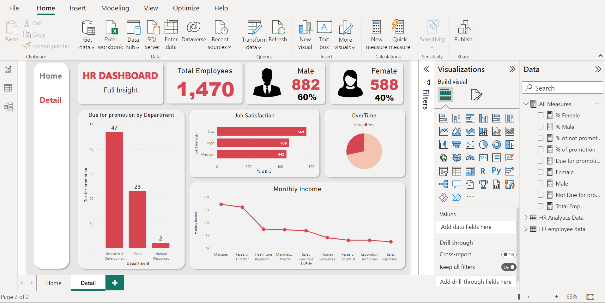

Description
I transformed an HR dataset using Power BI, creating an engaging dashboard that highlights department demographics and other key details.
Skills Applied: Power Query, Power BI
Implementation
- Utilized Power BI's Power Query tool to analyze and ensure consistent and accurate data in the HR dataset, while optimizing column data types for improved reference.
- Created new measures to improve the visualizations, ensuring that relevant information is displayed effectively.
- Utilized diverse visualization charts and employed various shapes to effectively segment the dashboard, resulting in a more distinct and comprehensive overview.
Breakdown
Power Query
Transforming data using Power Query

- In the initial stages of my project, I began by examining 2 tables and analyzing the necessary columns required for its implementation.
- Merged the tables using Power BI's Merge Query option and selected the relevant columns for the project, as shown in the yellow highlights in the picture.
- Utilizing conditional formatting, I generated a new column by transforming the data from one of the original columns, thereby providing more valuable information for the dashboard, as shown in the green highlights in the picture.
Power BI
Create Dashboard

- To achieve a clear and concise overview, I initially employed diverse shapes to effectively segment and organize the dashboard.
- Subsequently, I utilized the newly created measures to present informative demographics, emphasizing their significance by enlarging their size.

- Integrated diverse visualization charts to present the relevant information stakeholders need, enhancing the dashboard's overall appearance and organization.
- Created a user-friendly navigation panel, positioned on the left side of the dashboard, to provide effortless and intuitive page navigation for an enhanced user experience.